Planetary Oddities
The most commonly-seen planetary gearsets are shown on the Types of planetary gearsets page. Zoltan Levai showed that only 34 distinct types of planetary gearsets are possible, and developed a method for generating each type[1]. Norton's Design of Machinery [2] shows 12 of these in a 'skeletal' format - these are the 'planetary oddities' shown on this page. Note that types 'sun/ring/planet' and 'two suns, two planets' were shown on the Types of planetary gearsets page.
The planetary gearsets shown below do not find much use in practice, but they are interesting to consider, nonetheless. Most of these gearsets are difficult to design with reasonable efficiency, and the 'traditional' gearsets shown earlier are more practical.
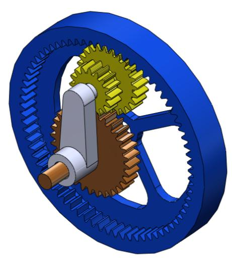 |
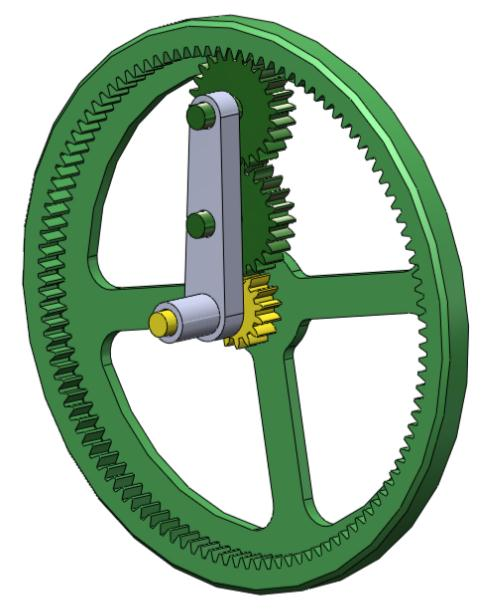 |
| Sun, ring and two planets - 1 | Sun, ring and two planets - 2 |
The topologies above are extensions of the 'sun, ring, planet' gearset shown on the Introduction page. By attaching an additional gear to the planet we can achieve even higher speed reductions in a small space, as shown in the figure above left. Inputs and output are taken from the arm (carrier), sun and ring gears. Note that the planet gears are attached to each other, and move as a unit.
In the figure at right, the two planets are separate. Note that the carrier moves clockwise in the animation, in contrast with the counterclockwise motion of the carrier at left.
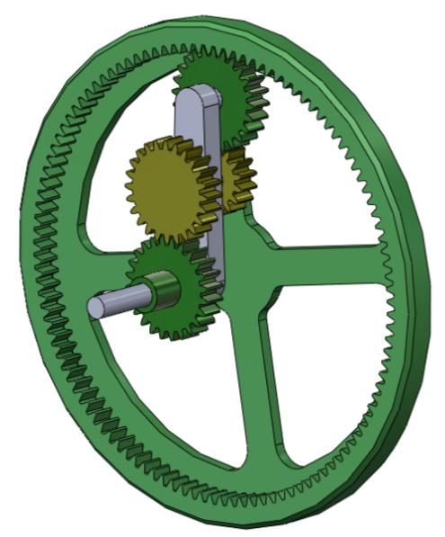 |
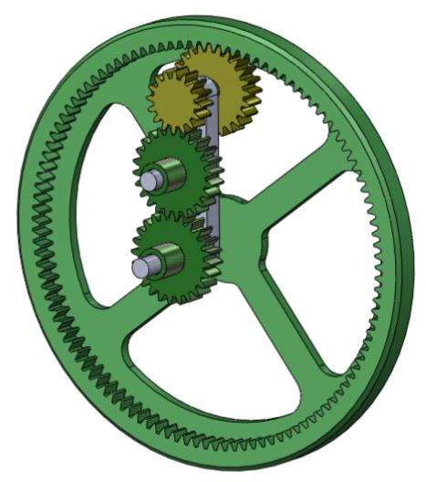 |
| Sun, ring and three planets - 1 | Sun, ring and three planets - 2 |
The two topologies above are very similar, differing only in where the dual planet is located. In the figure at left, the dual planet meshes with the sun and an outer planet, while in the figure at right the dual planet meshes with the ring. Note how much faster the gearset at right rotates, despite the fact that the input (the sun gear) moves at the same rate in both cases.
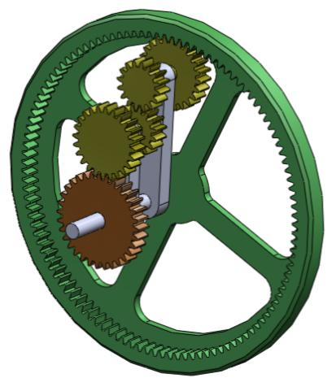 |
| Sun, ring and four planets - 1 |
This is quite a complicated topology, and requires a large number of gears. Note the complex construction required for the arm.
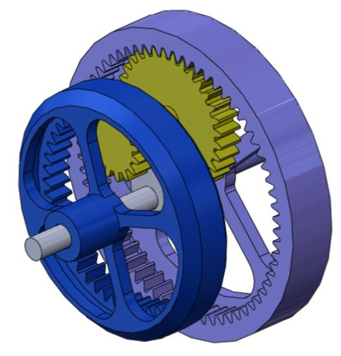 |
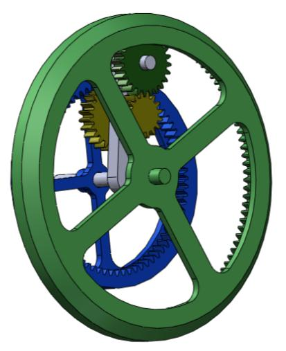 |
| Two rings, two planets | Two rings, three planets |
There is no reason that the two input shafts cannot be internal gears, as these gearsets demonstrate. The figure at left is the simplest topology with two rings, and the figure at right is only slightly more complicated, having three planets. It is relatively simple to attach an external gear or chain sprocket to the outside of the two rings in order to couple these gears with the outside world.
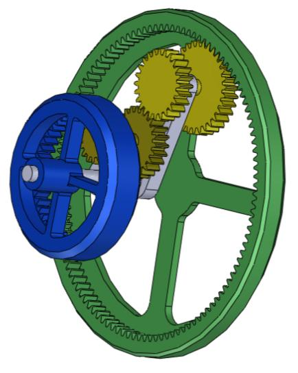 |
| Two rings, four planets |
This gearset has two rings and four planets. It is, of course, possible to keep adding gears to the gearset, either singly or in pairs. The resulting gearsets are not necessarily more interesting, however!
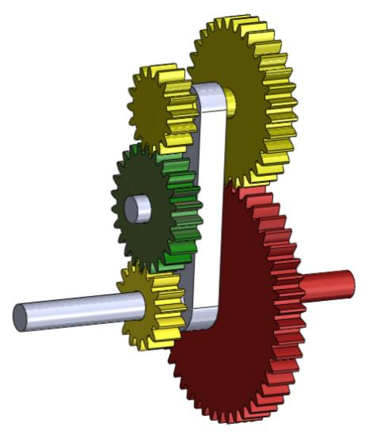 |
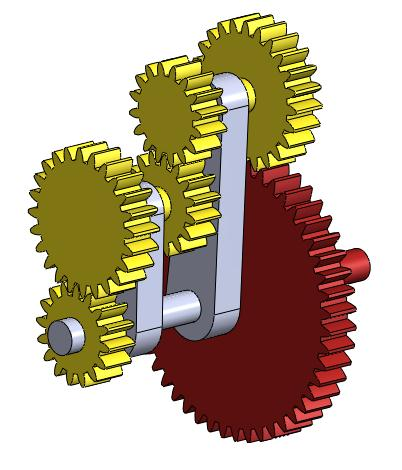 |
| Two suns, three planets | Two suns, four planets |
These topologies are an extension of the 'two suns - two planets' gearset. Play the animation at left and watch the green planet gear. Its lack of rotation might seem to be a mistake in the animation, but is in fact accurate! Yet another example of the counterintuitive behavior of planetary gearsets.
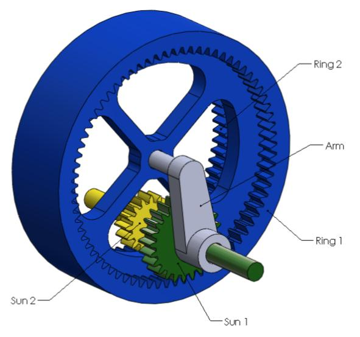 |
| Two rings, two suns |
This last animation shows that ring gears are not necessarily fixed, but can act as planets in some configurations. Careful, this animation may produce seasickness!
[1] Levai, Z. (1968). 'Structure and Analysis of Planetary Gear Trains.' Journal of Mechanisms,3, pp. 131-148.
[2] Norton, Robert L. (2008). 'Design of Machinery, 4th Ed.' McGraw-Hill, p. 505.